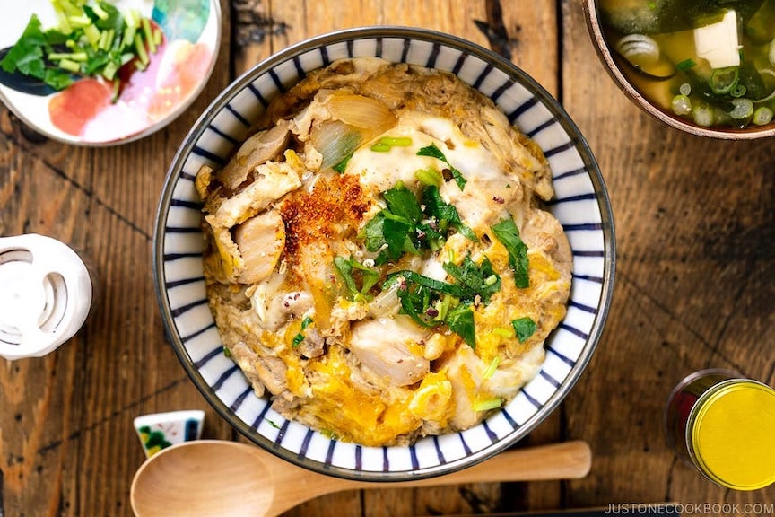

Oyakodon (Chicken and Egg Rice Bowl)

Oyakodon is a classic comfort food of Japanese home cooking.
It is a meal that can be cooked in less than 30 minutes.
Japan not only offers hamburger and french fries.
Their menu also includes noodles and donburi (rice bowl) meals.
Ingredients
- Chicken thighs
- Sake
- Onion
- Eggs
- Mitsuba – This Japanese wild parsley has a celery-like flavor with a slightly bitter taste. Because of its refreshing and unique flavor, the herb is used in many donburi dishes as a garnish. You can substitute it with diagonally thinly sliced green onions.
- Seasonings: Dashi (Japanese soup stock), soy sauce, mirin, and sugar.
- Steamed Rice
- Shichimi togarashi (Japanese seven spice) [optional for spicy kick]
- Sansho pepper powder [optional for fragrance] – It is finely grind peppercorns of the prickly ash tree and has a vibrant peppery-lemon flavor with a long residual heat.
Cooking Steps
- Prepare the ingredients: Cut the onion, mitsuba/green onions, and chicken and crack the eggs.
- Cook the onion in the seasoning mixture.
- Add the chicken and cook until no longer pink.
- Drizzle egg mixture at two separate times. Garnish mitsuba/green onions.
- Spoon the finished dish over the bed of steamed rice in a donburi bowl.
Homepage